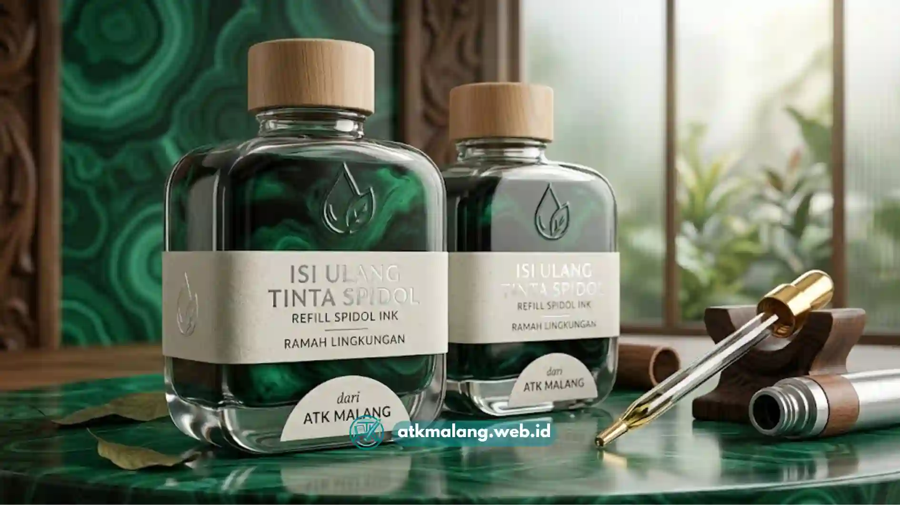

Rapat baru berjalan separuh, tapi tulisan di papan sudah memudar. Atau guru sedang menjelaskan rumus penting, tiba-tiba spidol mengeluarkan suara "kres-kres" tanda tintanya sekarat.
Situasi ini akrab bagi siapa pun yang bertanggung jawab menyediakan perlengkapan Alat Tulis Kantor dan kebutuhan edukasi di sekolah.
Penyebabnya sering kali sederhana: pemilihan spidol whiteboard malang yang tidak mempertimbangkan formulasi tinta dan kualitas mata serat, sehingga terlihat murah di awal namun justru boros.
Artikel ini membahas cara memilih spidol whiteboard yang benar-benar hemat dalam pemakaian jangka panjang, sekaligus mudah dihapus tanpa meninggalkan noda membandel di papan.
Daftar Isi
Kriteria Utama Spidol Whiteboard Hemat dan Berkualitas
Spidol whiteboard malang yang hemat tinta dan berkualitas harus memiliki kriteria ujung serat akrilik kokoh, serta formulasi tinta cepat kering yang tidak membekas di papan tulis.
Selain itu, perhatikan kemudahan sistem isi ulang (refill) tinta yang praktis tanpa bocor agar efisiensi pengadaan Alat Tulis Kantor tetap terjaga.
Tiga kriteria di atas terdengar sederhana, tapi masing-masing punya dampak nyata terhadap pengeluaran bulanan sekolah maupun kantor jika diabaikan.
Memahami Perbedaan Formulasi Tinta, Alkohol Dry-Erase vs Pelarut Biasa
Salah satu sumber keluhan paling umum adalah noda hitam yang membandel di papan tulis meski sudah dihapus berkali-kali.
Ini bukan soal penghapus Alat Tulis Kantor yang buruk, melainkan jenis tinta spidol whiteboard yang dipakai.
- Tinta berbasis alkohol (dry-erase formula): Dirancang khusus agar tidak menempel permanen pada permukaan whiteboard yang dilapisi melamine. Tinta jenis ini mengering cepat di permukaan tapi tetap mudah terangkat penghapus karena tidak meresap ke pori-pori papan.
- Tinta berbasis pelarut biasa (bukan dry-erase): Yang sering ditemukan pada spidol permanen atau spidol murah tanpa spesifikasi jelas, cenderung meninggalkan bayangan warna karena pigmennya lebih agresif menempel.
Tim ATK Malang secara konsisten menyeleksi produk yang secara eksplisit mencantumkan formulasi dry-erase pada kemasannya.
Karena inilah pembeda utama antara spidol boardmarker murah yang benar-benar ekonomis versus yang justru berujung merusak papan tulis dalam jangka panjang.
Ketahanan Mata Spidol Terhadap Tekanan Menulis Guru
Faktor kedua yang jarang disorot adalah daya tahan mata spidol (nib) terhadap tekanan menulis yang berulang setiap harinya.
Guru yang mengajar berjam-jam cenderung menekan spidol lebih kuat saat menulis di papan besar, dan inilah yang membuat mata spidol berbahan busa tipis cepat gepeng atau berjumbai.
Untuk mengamankan Alat Tulis Kantor sekolah, spidol dengan ujung serat akrilik terbukti lebih tahan terhadap tekanan berulang.

Proses isi ulang tinta (refill) yang tepat membantu memperpanjang umur pakai spidol.Hasil goresannya pun tetap konsisten dari hari pertama pemakaian hingga tinta benar-benar habis, bukan melebar tidak beraturan setelah dipakai beberapa minggu.
Tips Isi Ulang Tinta agar Spidol Tidak Cepat Kering
Sistem refill sebenarnya adalah cara paling efektif menekan biaya pengadaan Alat Tulis Kantor jangka panjang, asalkan dilakukan dengan benar:
- Isi ulang tinta sebelum spidol benar-benar kering total, karena mata spidol yang sudah terlalu kering butuh waktu lebih lama menyerap tinta baru secara merata.
- Gunakan botol refill khusus dengan ujung nozzle presisi agar tidak berlebihan mengisi dan menyebabkan tinta merembes keluar dari badan spidol.
- Selalu tutup rapat spidol setelah dipakai. Kebiasaan sepele ini adalah penyebab utama spidol whiteboard cepat kering meski tintanya masih tersisa banyak.
- Simpan spidol dalam posisi mendatar (horizontal), bukan berdiri dengan ujung mengarah ke bawah dalam waktu lama, agar distribusi tinta ke mata spidol tetap seimbang.
Perbandingan Produk Spidol Whiteboard
Berikut perbandingan tiga tipe spidol whiteboard yang paling umum tersedia di pasaran, untuk membantu sekolah maupun kantor menentukan pilihan:
| Tipe Spidol | Kemudahan Dihapus | Kapasitas Tinta (ml) | Rata-rata Panjang Garis (meter) | Estimasi Penghematan Bulanan |
|---|---|---|---|---|
| Refillable Premium | Sangat mudah, tanpa bayangan | 6–8 ml (+ refill) | ± 800–1.000 m (per isi) | Signifikan untuk pemakaian intensif harian |
| Ekonomis Sekali Pakai | Mudah, namun cepat pudar | 3–4 ml | ± 300–350 m | Rendah, cocok pemakaian insidental |
| Jumbo (Board Besar) | Mudah, tinta lebih pekat | 10–12 ml | ± 1.100–1.300 m | Tinggi untuk ruang rapat atau aula besar |
Untuk sekolah dan kantor dengan intensitas pemakaian harian, tipe refillable premium umumnya lebih hemat dalam hitungan tiga bulan ke depan.
Ini lebih efisien dibanding terus-menerus membeli produk Alat Tulis Kantor sekali pakai, meski harga satuan awalnya sedikit lebih tinggi.
Kapan Sebaiknya Beralih ke Agen Alat Tulis Kantor Malang
Jika pengeluaran bulanan untuk spidol whiteboard terasa tidak proporsional dengan intensitas pemakaian, ini pertanda saatnya meninjau ulang pemasok.
Sebagai agen Alat Tulis Kantor malang, ATK Malang membantu sekolah dan perusahaan menyusun kombinasi produk yang tepat.
Kami memadukan tipe refillable untuk ruang kelas yang aktif setiap hari dengan tipe ekonomis untuk ruang yang jarang dipakai.
Sehingga anggaran tetap efisien tanpa mengurangi kualitas presentasi maupun pengajaran.
Hemat Bukan Berarti Asal Murah
Memilih spidol whiteboard bukan sekadar membandingkan harga per batang di rak toko atau katalog distributor.
Formulasi tinta, ketahanan mata spidol, dan kemudahan isi ulang adalah tiga variabel yang menentukan total biaya sesungguhnya dari Alat Tulis Kantor Anda.
Spidol yang tampak lebih mahal di awal justru sering kali jadi pilihan paling ekonomis setelah dihitung berdasarkan durasi pemakaian dan frekuensi penggantian.